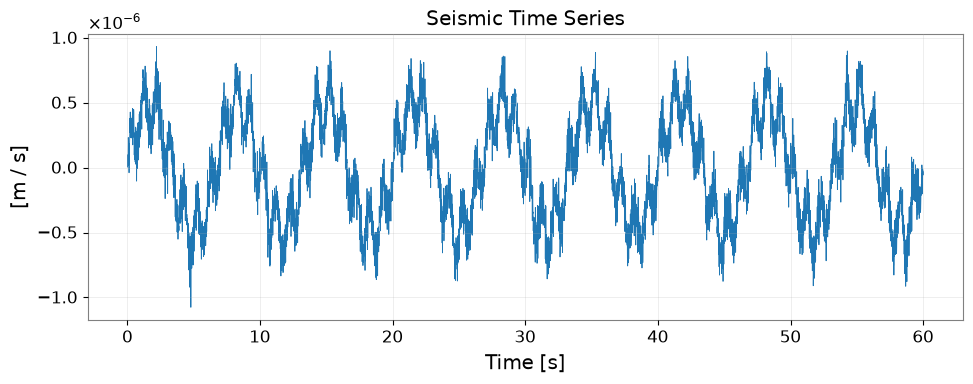
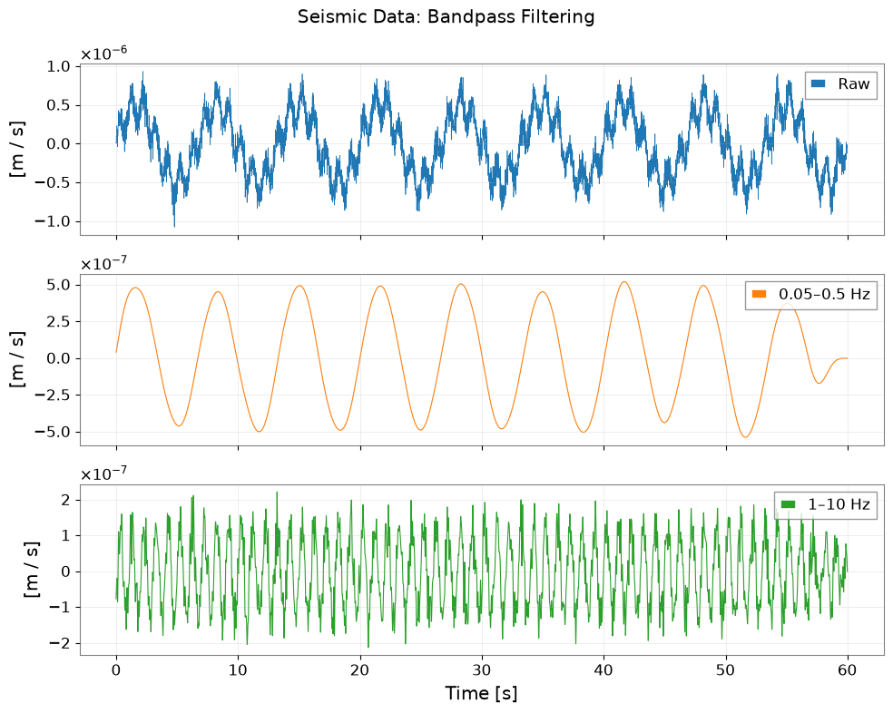
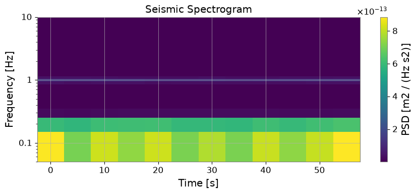
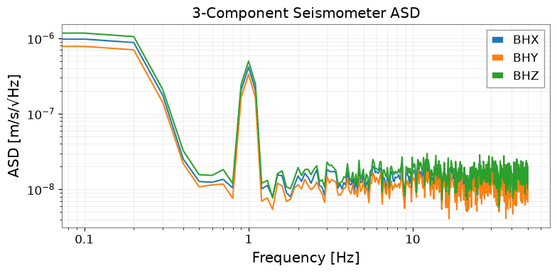

Note
This page was generated from a Jupyter Notebook. Download the notebook (.ipynb)
[1]:
# Skipped in CI: Colab/bootstrap dependency install cell.
Case Study: Seismic Analysis with ObsPy

This tutorial demonstrates how to read seismological data in MiniSEED / SAC / FDSN formats and analyze it using gwexpy, with seamless conversion between obspy and gwexpy objects.
Use cases in GW detector science
Reading seismometer data from KAGRA, LIGO, or Virgo environment monitors
Seismic noise analysis and coupling to detector sensitivity
Cross-correlation of seismic channels with gravitational-wave data
obspy.read() directly followed by manual numpy processing, replace it with TimeSeries.read(format='miniseed') and gwexpy’s high-level signal processing methods.[2]:
import matplotlib.pyplot as plt
import numpy as np
from astropy import units as u
from gwexpy.timeseries import TimeSeries
# ObsPy is an optional dependency
try:
import obspy
OBSPY_AVAILABLE = True
print(f"ObsPy version: {obspy.__version__}")
except ImportError:
OBSPY_AVAILABLE = False
print("ObsPy not installed. Install with: pip install obspy")
print("This tutorial will show the API but skip cells requiring obspy.")
ObsPy not installed. Install with: pip install obspy
This tutorial will show the API but skip cells requiring obspy.
1. Route 1: TimeSeries.read(format='miniseed')
gwexpy’s I/O layer supports reading MiniSEED files directly, returning a TimeSeries object with correct units and time axis.
[3]:
# --- Route 1: Read MiniSEED via gwexpy I/O ---
# Replace the path below with your actual MiniSEED file
#
# ts_seismic = TimeSeries.read(
# "path/to/seismic.mseed",
# format='miniseed',
# )
#
# Or read SAC format:
# ts_seismic = TimeSeries.read("path/to/seismic.sac", format='sac')
#
# For FDSN web service (requires network access):
# ts_seismic = TimeSeries.read(
# "IU.ANMO.00.BHZ",
# format='miniseed',
# start=1234567890,
# end=1234568090,
# )
print("Route 1: TimeSeries.read(format='miniseed') or format='sac'")
print("This returns a TimeSeries with GPS time axis, units, and channel name.")
Route 1: TimeSeries.read(format='miniseed') or format='sac'
This returns a TimeSeries with GPS time axis, units, and channel name.
2. Route 2: from_obspy_trace() – Convert from obspy objects
If you already have an obspy.Trace or obspy.Stream, convert it to gwexpy with from_obspy_trace().
[4]:
if OBSPY_AVAILABLE:
# Simulate obspy workflow
# Normally: st = obspy.read("seismic.mseed")
# Here we create a synthetic trace for demonstration
rng = np.random.default_rng(0)
fs_seis = 100.0 # 100 Hz seismometer
n_seis = 6000 # 60 seconds
t_seis = np.arange(n_seis) / fs_seis
# Simulate seismic noise + Rayleigh wave
seis_data = (
1e-7 * rng.normal(0, 1, n_seis) # broadband noise
+ 5e-7 * np.sin(2 * np.pi * 0.15 * t_seis) # 0.15 Hz microseism
+ 2e-7 * np.sin(2 * np.pi * 1.0 * t_seis) # 1 Hz noise
)
stats = obspy.core.Stats()
stats.network = "K1"
stats.station = "KAGRA"
stats.location = "00"
stats.channel = "BHZ"
stats.sampling_rate = fs_seis
stats.starttime = obspy.UTCDateTime("2023-01-01T00:00:00")
stats.npts = n_seis
tr = obspy.Trace(data=seis_data, header=stats)
print("obspy Trace:", tr)
# Convert to gwexpy TimeSeries
ts_seismic = TimeSeries.from_obspy_trace(tr, unit=u.m / u.s)
print("\nConverted to TimeSeries:")
print(f" t0 = {ts_seismic.t0:.3f}")
print(f" dt = {ts_seismic.dt}")
print(f" N = {len(ts_seismic.value)}")
print(f" unit = {ts_seismic.unit}")
print(f" name = {ts_seismic.name}")
else:
# Fallback: create synthetic data without obspy
rng = np.random.default_rng(0)
fs_seis = 100.0
n_seis = 6000
t_seis = np.arange(n_seis) / fs_seis
seis_data = (
1e-7 * rng.normal(0, 1, n_seis)
+ 5e-7 * np.sin(2 * np.pi * 0.15 * t_seis)
+ 2e-7 * np.sin(2 * np.pi * 1.0 * t_seis)
)
ts_seismic = TimeSeries(
seis_data,
dt=(1/fs_seis)*u.s,
t0=0*u.s,
unit=u.m/u.s,
name="K1:KAGRA.BHZ",
)
print("Created synthetic TimeSeries (no obspy)")
Created synthetic TimeSeries (no obspy)
3. Signal Processing on Seismic Data
Once converted to TimeSeries, all gwexpy signal processing methods are available.
[5]:
fig, ax = plt.subplots(figsize=(10, 4))
ax.plot(ts_seismic.times.value, ts_seismic.value, lw=0.6)
ax.set_xlabel("Time [s]")
ax.set_ylabel(f"[{ts_seismic.unit}]")
ax.set_title("Seismic Time Series")
ax.grid(True, alpha=0.3)
plt.tight_layout()
plt.show()

[6]:
# Bandpass filter to isolate seismic bands
ts_lf = ts_seismic.bandpass(0.05, 0.5) # 0.05–0.5 Hz: Earth's hum + microseism
ts_hf = ts_seismic.bandpass(1.0, 10.0) # 1–10 Hz: human-induced noise
fig, axes = plt.subplots(3, 1, figsize=(10, 8), sharex=True)
axes[0].plot(np.arange(len(ts_seismic.value)) / fs_seis, ts_seismic.value, lw=0.5, label="Raw")
axes[1].plot(np.arange(len(ts_lf.value)) / fs_seis, ts_lf.value, lw=0.8, label="0.05–0.5 Hz", color="C1")
axes[2].plot(np.arange(len(ts_hf.value)) / fs_seis, ts_hf.value, lw=0.8, label="1–10 Hz", color="C2")
for ax in axes:
ax.set_ylabel(f"[{ts_seismic.unit}]")
ax.legend(loc="upper right")
ax.grid(True, alpha=0.3)
axes[2].set_xlabel("Time [s]")
fig.suptitle("Seismic Data: Bandpass Filtering")
plt.tight_layout()

[7]:
# Amplitude Spectral Density
asd = ts_seismic.asd(fftlength=10.0, overlap=0.5)
fig, ax = plt.subplots(figsize=(8, 4))
ax.loglog(asd.frequencies.value, asd.value)
ax.set_xlabel("Frequency [Hz]")
ax.set_ylabel(f"ASD [{asd.unit}]")
ax.set_title("Seismic ASD")
ax.grid(True, which="both", alpha=0.3)
# Annotate microseism peak
ax.axvline(0.15, color="C1", linestyle="--", label="0.15 Hz microseism")
ax.axvline(1.0, color="C2", linestyle="--", label="1.0 Hz noise")
ax.legend()
plt.tight_layout()

[8]:
# Spectrogram: Time-frequency map
sg = ts_seismic.spectrogram2(fftlength=10.0, overlap=5.0)
fig, ax = plt.subplots(figsize=(9, 4))
mesh = ax.pcolormesh(sg.times.value, sg.frequencies.value, sg.value.T, shading="auto")
ax.set_yscale('log')
ax.set_ylim(0.05, 10)
ax.set_xlabel("Time [s]")
ax.set_ylabel("Frequency [Hz]")
ax.set_title("Seismic Spectrogram")
plt.colorbar(mesh, ax=ax, label=f"PSD [{getattr(sg, 'unit', '')}]")
plt.tight_layout()
plt.show()

4. Convert Back to obspy
After gwexpy processing, convert the result back to obspy for further seismological analysis (e.g., instrument response removal, FDSN upload).
[9]:
import warnings
warnings.filterwarnings("ignore", category=UserWarning)
warnings.filterwarnings("ignore", category=DeprecationWarning)
if OBSPY_AVAILABLE:
# Convert processed TimeSeries back to obspy Trace
tr_filtered = ts_lf.to_obspy_trace()
print("Converted back to obspy Trace:", tr_filtered)
# Or use the generic to_obspy dispatcher
from gwexpy.interop import to_obspy
tr_generic = to_obspy(ts_lf)
print("via to_obspy():", tr_generic)
else:
print("obspy not available – skipping round-trip conversion")
obspy not available – skipping round-trip conversion
5. Multi-channel Seismic Analysis
When you have multiple seismic channels (3-component seismometer: X, Y, Z), use TimeSeriesMatrix for batch processing.
[10]:
from gwexpy.timeseries import TimeSeriesMatrix
rng2 = np.random.default_rng(1)
# Three-component seismometer
components = ['BHX', 'BHY', 'BHZ']
data_3c = np.stack([
seis_data + 1e-8 * rng2.normal(0, 1, n_seis),
seis_data * 0.8 + 1e-8 * rng2.normal(0, 1, n_seis),
seis_data * 1.2 + 1e-8 * rng2.normal(0, 1, n_seis),
], axis=0)[:, np.newaxis, :] # (3, 1, n)
tsm_3c = TimeSeriesMatrix(
data_3c,
dt=(1/fs_seis)*u.s,
t0=0*u.s,
units=np.full((3, 1), u.m/u.s),
)
tsm_3c.channel_names = components
# ASD for all 3 components at once
asd_3c = tsm_3c.asd(fftlength=10.0, overlap=0.5)
fig, ax = plt.subplots(figsize=(8, 4))
for i, comp in enumerate(components):
ax.loglog(asd_3c[i, 0].frequencies.value, asd_3c[i, 0].value, label=comp)
ax.set_xlabel("Frequency [Hz]")
ax.set_ylabel("ASD [m/s/√Hz]")
ax.set_title("3-Component Seismometer ASD")
ax.legend()
ax.grid(True, which="both", alpha=0.3)
plt.tight_layout()

6. Migration Guide: obspy → gwexpy
Before (obspy + numpy):
import obspy
from scipy import signal
import numpy as np
st = obspy.read("seismic.mseed")
tr = st[0]
# Manual bandpass
tr_bp = tr.copy().filter('bandpass', freqmin=0.1, freqmax=1.0)
# Manual ASD with scipy
f, psd = signal.welch(tr.data, fs=tr.stats.sampling_rate, nperseg=1024)
asd = np.sqrt(psd)
# Manual spectrogram
f, t, Sxx = signal.spectrogram(tr.data, fs=tr.stats.sampling_rate)
After (gwexpy):
from gwexpy.timeseries import TimeSeries
ts = TimeSeries.read("seismic.mseed", format='miniseed')
# Or: ts = TimeSeries.from_obspy_trace(obspy.read("seismic.mseed")[0])
ts_bp = ts.bandpass(0.1, 1.0)
asd = ts.asd(fftlength=10.0, overlap=0.5) # FrequencySeries with units
sg = ts.spectrogram2(fftlength=10.0, overlap=5.0) # Spectrogram with GPS time axis
asd.plot() # Ready to plot with correct units and axis labels
Summary
Task |
gwexpy API |
|---|---|
Read MiniSEED file |
|
Read SAC file |
|
Convert from obspy Trace |
|
Convert to obspy Trace |
|
Bandpass filter |
|
ASD |
|
Spectrogram |
|
Multi-channel |
|
See also: